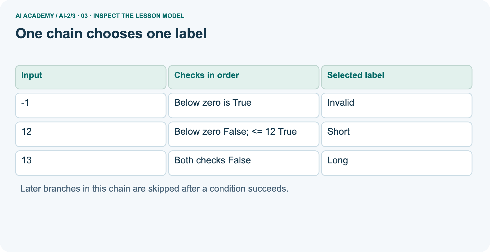
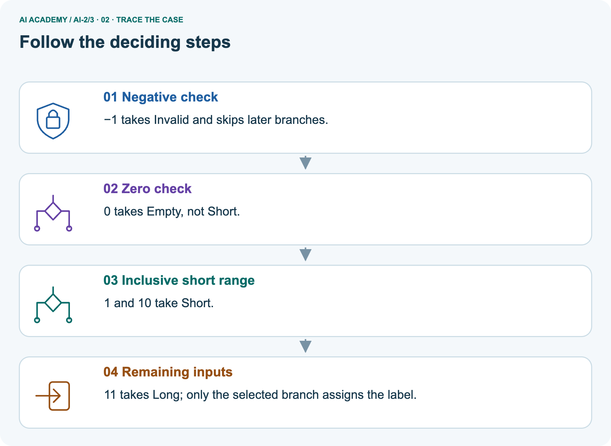
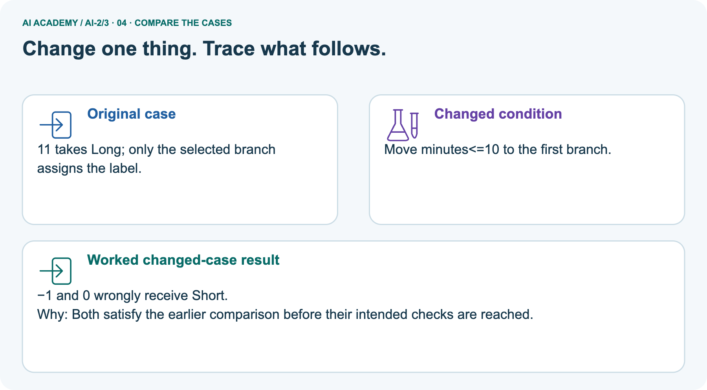
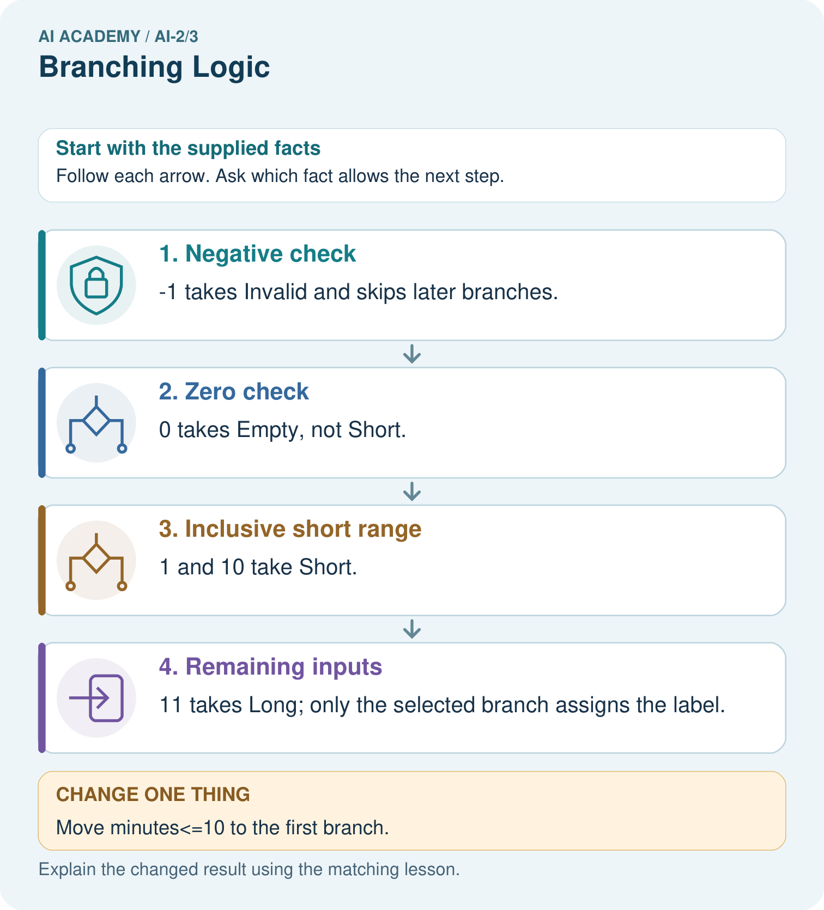
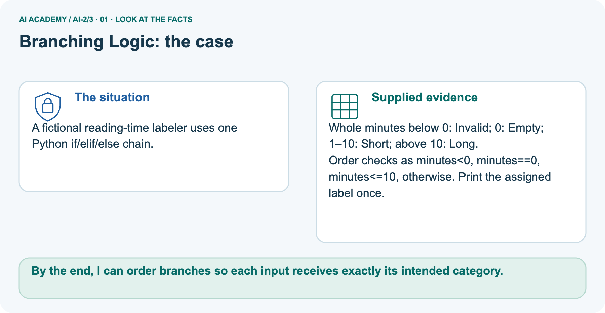
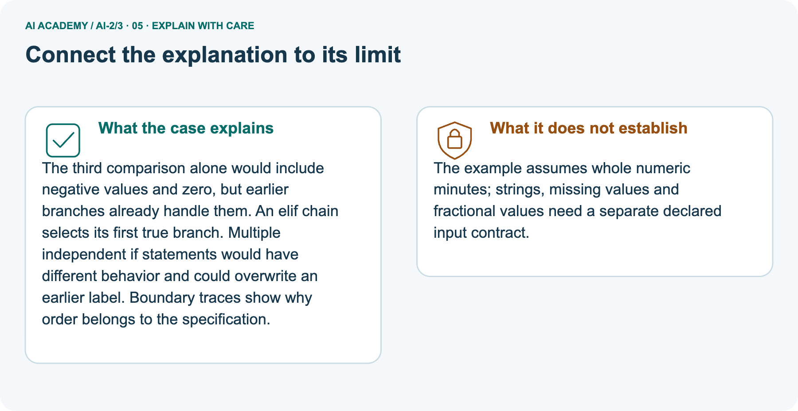
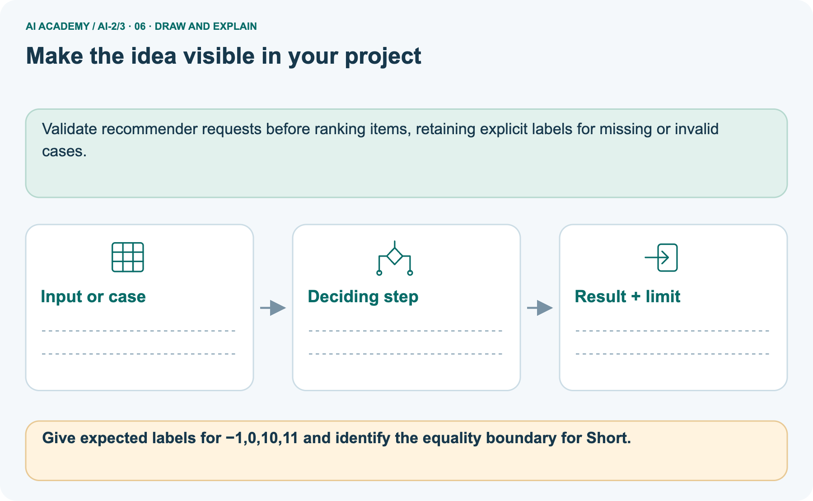

AI Academy · Level 2 · Grade 7 · Week 3 · Student lesson
Branching Logic
Learn to understand, design, build, test and explain AI systems responsibly.
Project: Transparent Book Recommender
THE CONNECTED WEEK
Read the rule. Trace the first true branch. Test equality.
Write an ordered duration sorter, expose overwritten labels and compare clearly labelled category contracts.
Keep one habit: Specify categories → trace checked conditions → test the exact boundary and retain failures.
Main lesson · Section 1
Which condition is checked next—and which is skipped?
Trace ordered branches and test the equality that changes a category.
Start with the first true branch
The first true branch decides the path in an if/elif/else chain. Write the intended categories first, then test an exact boundary and inspect which later conditions were skipped.
Recall inclusive versus strict comparison
Close your notes first. A rough first answer helps us choose the right starting point; it is not a score for your ability.
After trying, check the relevant lesson or ask your teacher. Change the part of your explanation that the evidence shows was wrong.
Does minutes <= 12 accept exactly 12? How does < differ?
Your learning goals
I can trace the selected branch in an if elif else chain.
I can use indentation to identify which statements belong to a branch.
I can test values at and around a decision boundary.
Earlier wording, alternatives and picture transcripts
Your learning target
Remember before reading
Without opening the old lesson, explain one key idea from Decompose a Goal. Give an example and a mistake that the idea helps you avoid.
Week 3: Branching Logic
Ordered conditions determine which path a system takes.

THINKER MISSION
Build and trace a three-branch pet-care algorithm.
Thinker name and date:
Readiness for the connected explanation
This week’s end goal
By the end, I can order branches so each input receives exactly its intended category.
Main lesson · Section 2
Specify the integer-duration sorter before coding
The main example calls zero Short and uses a twelve-minute boundary.
The complete main classification rule
A fictional activity sorter labels a supplied integer duration. Negative values are Invalid; values from zero through 12 are Short; larger values are Long. The labels describe duration only.
Write this requirement before the program so that a test has an expected answer independent of the code.
Read if, elif, else, colons and indentation
An if statement selects a block when its condition is true. An elif is considered only if earlier conditions in the same chain were false. An else handles the remaining cases. Colons end the condition lines.
Use four spaces for the indented statements and keep related branches aligned.
Earlier wording, alternatives and picture transcripts
PICTURE STORY
Notice → Predict → Explain
Begin with visible evidence. Do not explain more than the picture and information support.
MYSTERY
The learners must use branching logic to solve a problem. What information do they have? What decision or calculation do they make? What would count as evidence that it worked?
Three observations (what you can point to):
My prediction and the clue supporting it:
A closer explanation
Main lesson · Section 3
Trace the complete main Python chain
Each path assigns label before the single unindented print.
Inspect three representative paths
One chain chooses one label
Run the complete main script
minutes = 12
if minutes < 0:
label = "Invalid"
elif minutes <= 12:
label = "Short"
else:
label = "Long"
print(label)Explain why exactly one branch is selected
The output is Short. For 12, the first condition is false and the second is true. The else block is skipped. print(label) is not indented, so it runs after the selected branch.
Each path assigns label before this line reads it. Change only minutes and save before each fresh run.
Point to the input, the deciding step and the result in this week’s visual. Explain the same step in ordinary words. A picture helps when you can say what each part represents.
Earlier wording, alternatives and picture transcripts
VISUAL MECHANISM
Input → Process → Output
Trace the information. At each stage, ask what changed and how you could test it.

↓

↓

Which stage could fail even when the other two are correct? Explain:
A closer explanation
Connect the picture and the explanation
Main lesson · Section 4
Compare routine, equality, missing and transfer cases
Branch coverage alone does not establish correct category boundaries.
Four pictures with a purpose

Normal case: predict the result and deciding evidence.

Boundary case: identify the exact limit.

Missing information: name what must be clarified.

Transfer case: explain which procedure still applies.
Choose a revealing case
Which case is most likely to reveal a hidden assumption? Why?
Predict the supplied changed case
Change: Move minutes<=10 to the first branch.
Check after predicting
Prediction: −1 and 0 wrongly receive Short.
Reason: Both satisfy the earlier comparison before their intended checks are reached.
Earlier wording, alternatives and picture transcripts
CASE GALLERY
Four Tests, Four Kinds of Evidence
A system is not understood until it survives more than one comfortable example.
NORMAL CASE: predict and name evidence. BOUNDARY CASE: predict and name evidence.
MISSING INFORMATION: predict and name evidence. TRANSFER CASE: predict and name evidence.
Change one thing in the pictured case
Main lesson · Section 6
Test the main boundary, then the separate reading-time chain
The second example has Empty at zero and a ten-minute boundary; do not reuse the main rule’s labels.
Plan main tests below, at and above twelve
| Input minutes | Expected label | Reason for this test |
|---|---|---|
| -1 | Invalid | Negative input rejection |
| 0 | Short | Lowest valid duration |
| 11 | Short | Just below the upper boundary |
| 12 | Short | Exact upper boundary |
| 13 | Long | Just above the boundary |
These tests exercise every branch and the equality case. A change from <= 12 to < 12 is exposed by 12; testing 11 alone misses it.
Branch coverage means every branch was exercised, but it does not prove every condition is correct.
Predict the strict-comparison defect
Inspect the main twelve-minute diagram



Read the separate reading-time categories
A fictional reading-time labeler uses one Python if/elif/else chain.
Whole minutes below 0: Invalid; 0: Empty; 1–10: Short; above 10: Long.
Order checks as minutes<0, minutes==0, minutes<=10, otherwise. Print the assigned label once.
minutes = 0
if minutes < 0:
label = "Invalid"
elif minutes == 0:
label = "Empty"
elif minutes <= 10:
label = "Short"
else:
label = "Long"
print(label)Trace order, equality and skipped branches



Read the picture one step at a time
The third comparison alone would include negative values and zero, but earlier branches already handle them. An elif chain selects its first true branch.
Multiple independent if statements would have different behavior and could overwrite an earlier label. Boundary traces show why order belongs to the specification.
Predict the reordered chain
Before opening the reordered-branch picture, move the reading-time check minutes<=10 before the negative and zero checks in the same chain. Predict the labels for -1 and 0, and identify the intended categories that become unreachable for those inputs.
Check the branch-order failure



State the new rule’s expectations and type limit
Read the labelled picture: Give expected labels for −1,0,10,11 and identify the equality boundary for Short.
The example assumes whole numeric minutes; strings, missing values and fractional values need a separate declared input contract.
Earlier wording, alternatives and picture transcripts
WORKED EVIDENCE
Reason Step by Step
Predict first. Then check each step. A correct answer without visible reasoning is incomplete evidence.

1. IF pet is hungry → feed.
2. ELSE IF pet needs exercise → walk or play.
3. ELSE → provide a quiet rest space.
4. Boundary test: what if hungry and needs exercise? The first true branch wins.
Recalculate, retrace, or restate the reasoning in your own representation:
CHECK Did the evidence answer the exact question? Did the total, path, or source record stay consistent?
A closer explanation
Learn from the worked case
Cover the result before checking it. Say what is given, choose the procedure, and follow one step at a time. Then uncover the result and explain your first mismatch. Ask why a step is allowed, not only what number it produces.
A pictorial worked case: Branching Logic
The facts we will use



Why this result follows
What this example does not establish
Change one thing: Move minutes<=10 to the first branch. Predict the result before checking the explanation. What remains the same?
Main lesson · Section 7
Record checked and skipped conditions honestly
Coverage needs both paths and revealing boundary values.
Keep a per-run trace and regression tests
For each run, record input, expected label, conditions actually checked and observed label. Mark skipped conditions as skipped rather than pretending the program evaluated them. After a repair, rerun earlier cases as well as the failing one. Weeks 4 and 5 trace repeated blocks and examine loop progress and stopping.
Challenge three-branch coverage as proof
Earlier wording, alternatives and picture transcripts
ERROR DETECTIVE
Compare → Diagnose → Repair
Do not patch the answer. Find the earliest unsupported assumption, wrong step, or weak evidence.

| Evidence record | Expected | Actual | Likely cause / next test |
|---|---|---|---|
| normal case | works | ||
| boundary case | stated rule | ||
| missing input | safe response | ||
| fresh transfer | generalizes |
Repair one cause. Why is this repair better than changing several things?
A closer explanation
Main lesson · Section 8
Practise: find the assignment that overwrites the label
Separate if statements are not an elif chain.
Run the faulty two-if script
minutes = -1
if minutes < 0:
label = "Invalid"
if minutes <= 12:
label = "Short"
else:
label = "Long"
print(label)Locate the overwrite and attached else
This faulty version prints Short. The second if starts a separate decision and overwrites Invalid. Its else belongs to that second if. Restoring elif makes the second test depend on the first test failing.
Moving print inside one branch can also hide output on other paths; indentation affects behavior, not just appearance.
Keep the integer-only scope explicit
The script rejects negative integers, but it does not validate arbitrary types or check a measured duration. A supplied text value can raise an error during comparison.
Keep the stated integer input contract and report the limitation honestly.
Trace main paths in W2
Use workbook W2 for the connected example “Branching and boundary tests”. First fill the input and rule boxes. Try the middle steps before asking for a hint. After a hint, try the next step yourself.
| Plan | Do | Check |
|---|---|---|
| What is given? Which rule or procedure applies? | Record each intermediate step. | Does the result follow? What remains unknown? |
Explain your trace to a partner. Your partner points to one step to check. Swap roles on the next case. Each person writes their own explanation.
Repair the every-condition-runs claim
Use the worked case for Branching and boundary tests. Proposed explanation: “Every condition in the chain always runs”. Decide whether this explanation is supported.
Point to the step or supplied fact that decides; explain your repair if needed.
Answer on your own before discussion. If you are unsure, say which step you need help with.
Return to the reading-time boundary
Give expected labels for −1,0,10,11 and identify the equality boundary for Short.
This is supported practice. Keep the separately named independent case for an attempt before feedback.
Earlier wording, alternatives and picture transcripts
LOGIC STUDIO
Trace Before You Run
Block code, pseudocode, tables, and diagrams are different ways to expose the same reasoning.

SET evidence_record PREDICT expected_result RUN one normal case and one boundary case COMPARE actual_result with expected_result IF different: locate first cause; change one factor; RETEST EXPLAIN result, limitation, and next safe step
Trace one input. Which line changes the state or chooses a path?
A closer explanation
Practise with less help: Trace the tested path
Check your reasoning
Explain the picture
Main lesson · Section 9
Investigate order and exact boundaries with supplied cases
Keep the paper token rule distinct from the integer-duration code.
Prepare and compare the six fictional token cards
Paper branch station: use fictional pet cards, not real animal-care decisions. The supplied rule is Hungry Yes→Feed token; otherwise Needs play Yes→Play token; otherwise Rest token. Cards A=(Yes,Yes), B=(Yes,No), C=(No,Yes), D=(No,No), E=(Yes,Yes), F=(No,Yes). Predict each token under this ordered chain, then swap the first two checks and predict which cards change. Explain the first true condition; these tokens are an algorithm exercise, not care instructions.
Predict, run and repair the supplied scripts
Code station: predict and run the main duration script separately for -1,0,11,12,13. Record expected label, conditions actually tested, skipped conditions and actual output/error. Compare the two-independent-if version at -1, repair its second if to elif, then rerun earlier cases. Change <=12 to <12 in a separately labelled version and test the exact boundary. Keep the independent tile sorter for an uncoached attempt and label paper-only results as traces.
Keep the evidence table
| Test / input | Prediction | Actual | Evidence / calculation | Change or keep? |
|---|---|---|---|---|
| normal | ||||
| boundary | ||||
| missing | ||||
| fresh transfer |
Explain the most revealing test
What did the hardest test teach you that the normal test did not?
Before trying: what do I expect, and why? While trying: which step could first go wrong? Afterwards: what did I actually observe, and what should change? Keep “not run” if you only traced the procedure.
Earlier wording, alternatives and picture transcripts
EVIDENCE LAB
Predict → Test → Record → Explain
Keep expected and actual results separate. Surprises are useful data when recorded honestly.

Trace six pet cards through the same ordered rules. Change only the rule order and compare outputs.
Plan → try → check
Main lesson · Section 14
Try alone: implement the different tile categories
Use its zero category and six-tile boundary before feedback.
The independent category contract
Use an integer tiles count. Label a negative value Invalid, zero Empty, 1 through 6 Small and values above 6 Large. Write an ordered if elif else script and predict -1, 0, 1, 6 and 7. Include one print after the chain.
Keep your first attempt
Attempt this case before feedback. Record any help. Earlier examples below are further practice; a case already practised with feedback cannot establish fresh transfer.
Your teacher has the independent answer and scoring criteria. Complete the matching workbook week to keep your practice evidence together.
Use feedback afterwards
Attempt the independent case before hints. Record whether you worked alone, used a hint or followed a model. After feedback, fix the first unsupported step and explain why it changed.
A later check uses a changed case, not a copied answer.
Earlier wording, alternatives and picture transcripts
Independent case: Build a new sorter independently
Week 3 Independent application
Close the worked explanation. Apply the idea to this different question without copying.
If pages are at most 80, choose short; otherwise choose long. Classify books with 79, 80 and 81 pages and explain the boundary.
My answer, with a trace, calculation or supporting evidence
Create and test
Change one relevant detail. Predict the result before testing. Include a boundary or missing-information case when it helps reveal a limit.
My changed input and expected result
Connect to your project
Branch when a reader has a hard constraint such as language, format, or maximum length.
The evidence I will keep
Transfer practice from the original programme
Classify lengths with if pages<80 then Short; else if pages<=160 then Medium; else Long. Trace 79,80,160,161. What happens if the <=160 branch is placed first?
Use feedback to improve
Main lesson · Section 11
Add explicit eligibility and clarification branches
Keep hard constraints separate from later scoring and human choice.
This week’s bounded contribution
For the Transparent Book Recommender, specify hard constraints and invalid or missing inputs before ranking. Use fictional records and the declared project rules. A preference score must not silently override an eligibility condition. This week contributes explicit branches and reasons; it does not establish reader satisfaction or a complete recommender.
The checkpoint and system map
THIS WEEK’S CHECKPOINT Branch when a reader has a hard constraint such as language, format, or maximum length.
SYSTEM MAP Reader need → allowed inputs → transparent rule or score → ranked candidates → explanation → test record → human decision
Validate recommender requests before ranking items, retaining explicit labels for missing or invalid cases.
Record the branch and who may act
What will you add, change, or verify in the project this week?
What should remain under human control?
Preserve privacy and uncertainty
RESPONSIBLE DESIGN Collect only necessary information. Show uncertainty and limits. Never confuse a ranking with a fact about a person.
Earlier wording, alternatives and picture transcripts
CUMULATIVE PROJECT
Transparent Book Recommender
Every week adds one inspectable piece. The system must show how it reached a result.

Evidence for your project
Main lesson · Section 16
Finish: explain the selected path and a boundary test
Close your notes and say why later conditions were skipped.
Your exit explanation
Close your notes. Explain this goal in your own words: Trace the selected branch in an if elif else chain
Choose the next revealing test
If you are unsure, return to the worked picture and explain one arrow. If you are ready, change an input or assumption and justify your prediction.
Save your workbook evidence. At the next review, try a different case before opening your old answer.
Reference bank and extra practice
Choose the reference that helps your next step.
Your quick word guide
Reference · Section 5
Your quick word guide
Use the words to explain a particular step, record or limit.
Core vocabulary
| Word | My own example | Not this / boundary |
|---|---|---|
| condition | A statement evaluated as true or false to help select an action. | |
| branch | One path taken when a condition selects among alternatives. | |
| if/else | A programming structure that chooses a path according to whether a condition is true or false. | |
| order | The sequence in which steps are performed or items are read. |
Terms for the connected explanation
| Word | Meaning |
|---|---|
| Indentation | Leading spaces that identify a Python code block |
| Boundary | A value where a classification may change |
| Regression check | A previous test rerun after an edit to detect a new failure |
Earlier wording, alternatives and picture transcripts
VOCABULARY LAB
Words You Can Use to Reason
A definition matters when you can recognize the idea, use it, and contrast it with a near-miss.


Words used in the closer explanation
Choose a stronger thinking challenge
Reference · Section 10
Choose a stronger thinking challenge
Choose the next useful challenge rather than treating the whole ladder as compulsory.
Pick your next step
1 • NAME: Define the concept without repeating the textbook.
2 • TRACE: Show the information, state, branch, calculation, or evidence path.
3 • APPLY: Solve a different example independently.
4 • CHALLENGE: Find a boundary case, counterexample, or unfair outcome.
5 • EXPLAIN LIMITS: Say when the result should not be trusted or used alone.
My strongest evidence of independent understanding:
Earlier wording, alternatives and picture transcripts
MASTERY
From Knowing the Word to Owning the Idea
Move upward only when you can produce evidence without copying the worked example.

Reference: check your explanation
Reference · Section 12
Reference: check your explanation
Use after practice. Build a new sorter independently is the selected independent case.
Check the evidence and its limit
1. My fresh example, trace, calculation, or design:
2. My evidence that it works (include a boundary or missing-data case):
3. One limitation, fairness concern, or situation needing human review:
Self-check and record
SELF-CHECK □ I explained the mechanism □ I used evidence □ I tested a fresh case □ I named a limitation □ I can answer ‘why?’
Earlier wording, alternatives and picture transcripts
INDEPENDENT MASTERY PROOF
Checklist for explaining this week’s idea
Use after practice. Build a new sorter independently is the selected independent case.

EXPLANATION CHECK Trace only the conditions reached, preserve ordered branches and test equality against the written category rule.
Extra practice: Test strict and inclusive page boundaries
Reference · Section 13
Extra practice: Test strict and inclusive page boundaries
Try the question before opening its worked explanation.
Read the supplied case and question
If pages<100 choose Short; otherwise if pages<=200 choose Medium; otherwise Long.
Classify 99,100,200,201 pages.
Your explanation
Which detail supports the answer, and why does it matter?
Check after trying
Short, Medium, Medium, Long. Strict and inclusive boundaries and branch order matter.
| Evidence or stage | Value or result |
|---|---|
| 99 pages | Less than 100 → Short |
| 100 pages | 100 to 200 inclusive → Medium |
| 200 pages | 100 to 200 inclusive → Medium |
| 201 pages | Greater than 200 → Long |
Earlier wording, alternatives and picture transcripts
Week 3 Worked case
Use the supplied details to practise the weekly concept before attempting the independent question. This case extends the illustrated lesson.
The situation
The question
Worked explanation
Explain it in your own words
Trace the supplied case visually
Test strict and inclusive page boundaries
If pages<100 choose Short; otherwise if pages<=200 choose Medium; otherwise Long.
Classify 99,100,200,201 pages.
Short, Medium, Medium, Long. Strict and inclusive boundaries and branch order matter.
Reference: original lesson checklist
Reference · Section 15
Reference: original lesson checklist
Use an additional checklist when it helps inspect your explanation.
Targets and evidence
| By the end, I can | How I will show it |
|---|---|
| Trace the selected branch in an if elif else chain | Explain the deciding step, show a trace or test, and state one limit. |
| Use indentation to identify which statements belong to a branch | Explain the deciding step, show a trace or test, and state one limit. |
| Test values at and around a decision boundary | Explain the deciding step, show a trace or test, and state one limit. |
Keep your route and first prediction
Remember → watch and explain → try with help → investigate → try independently → keep project evidence. Your teacher may spread this lesson across several classes.
Keep your first prediction. Compare it with what the evidence shows and explain any change.
Earlier wording, alternatives and picture transcripts
Start with this question: A fictional reading-time labeler uses one Python if/elif/else chain.
Extra practice: pictures, repair and feedback
Reference · Section 17
Extra practice: pictures, repair and feedback
Attempt each question before opening its explanation. Use one browser or paper copy.
First supported question
A fictional reading-time labeler uses one Python if/elif/else chain.
Which labelled step matches this detail? 11 takes Long; only the selected branch assigns the label.
1. Negative check
2. Zero check
3. Inclusive short range
4. Remaining inputs
Hint if needed: Read the steps in the pictorial case. Match the supplied detail to the stage that performs or records it.
Practice 1: explain the deciding evidence
Check the first explanation
After your attempt, compare with the supported explanation: Remaining inputs 11 takes Long; only the selected branch assigns the label.
The third comparison alone would include negative values and zero, but earlier branches already handle them. An elif chain selects its first true branch.
Multiple independent if statements would have different behavior and could overwrite an earlier label. Boundary traces show why order belongs to the specification.
Changed-case question
Changed-case practice: Move minutes<=10 to the first branch. Which conclusion is supported by the supplied facts?
1. We can decide the result without examining the changed input or the procedure.
2. −1 and 0 wrongly receive Short.
3. This one example guarantees correct results for every future input.
Hint if needed: Use the changed condition and the deciding step in the pictorial trace. The answer must say what follows from those facts.
Practice 2: explain the deciding evidence
Check the changed case
After your attempt, compare with the supported explanation: −1 and 0 wrongly receive Short. Both satisfy the earlier comparison before their intended checks are reached.
Repair and save your work
Review Decompose a Goal (ai-2/2). Goal: Distinguish a function definition from a function call. Short practice: What happens visibly if the caller stores needed but omits print(needed)?.
Return to this week and explain what you changed.
The browser lab lets you edit the supported Python examples already included in this lesson. Predict first, run, inspect the actual output or error, change one input, then run again.
Keep code, predictions, actual results and a reasoned revision together. On paper, label your result as a trace rather than an execution.
Use Download completed work in the hosted lesson to export your answers, reflections, practice feedback and code-run evidence. Open the HTML copy to read or print it.
Drafts stay in this browser when storage is available; clear drafts on a shared device.
Earlier wording, alternatives and picture transcripts
Use this supported practice once, in the browser or on paper. Keep the reserved independent assessment for a separate first attempt before teacher feedback.
Repair a missing building block
Predict, run and debug
Keep your completed work
Reference: the six-picture journey
Reference · Section 18
Reference: the six-picture journey
Revisit the picture that serves the current question; key diagrams already sit beside the main explanation.
01. Branching Logic: the case



A fictional reading-time labeler uses one Python if/elif/else chain. Supplied facts: Whole minutes below 0: Invalid; 0: Empty; 1–10: Short; above 10: Long. Order checks as minutes<0, minutes==0, minutes<=10, otherwise.
Print the assigned label once.
Point to the given fact that matters most. Explain why it matters.
02. Follow the deciding steps
Negative check: −1 takes Invalid and skips later branches. → Zero check: 0 takes Empty, not Short. → Inclusive short range: 1 and 10 take Short. → Remaining inputs: 11 takes Long; only the selected branch assigns the label.
Point to each numbered stage and explain which recorded input it uses.
03. One chain chooses one label
One chain chooses one label. -1 | Below zero is True | Invalid. 12 | Below zero False; <= 12 True | Short. 13 | Both checks False | Long
Read the labels and values. Explain the relationship the model shows.
04. Change one thing. Trace what follows.
Original case: 11 takes Long; only the selected branch assigns the label. Changed condition: Move minutes<=10 to the first branch. Expected result: −1 and 0 wrongly receive Short.
Reason: Both satisfy the earlier comparison before their intended checks are reached.
Predict before checking the worked changed-case result. Name what changed and what the supplied facts allow you to conclude.
05. Connect the explanation to its limit



The third comparison alone would include negative values and zero, but earlier branches already handle them. An elif chain selects its first true branch.
Multiple independent if statements would have different behavior and could overwrite an earlier label. Boundary traces show why order belongs to the specification.
Limit: The example assumes whole numeric minutes; strings, missing values and fractional values need a separate declared input contract.
Explain the case, then point to a limit on the claim.
06. Make the idea visible in your project



Validate recommender requests before ranking items, retaining explicit labels for missing or invalid cases. Draw your input, deciding step, result and limit.
Supported question: Give expected labels for −1,0,10,11 and identify the equality boundary for Short.
Draw your project trace and justify the deciding step using evidence.